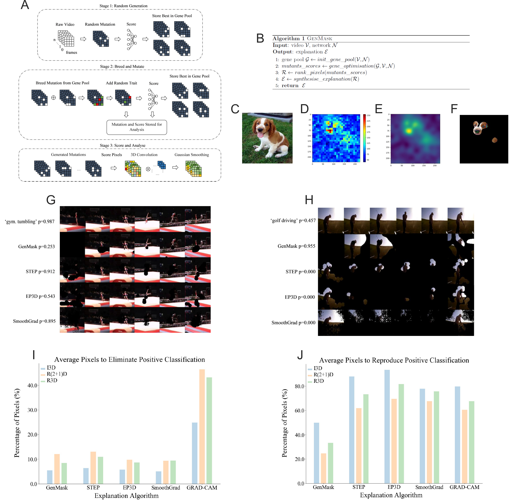

Data Scientist/Machine Learning Engineer
University of Oxford
Hello! I'm Thomas, a passionate data scientist currently working at the University of Oxford researching Parkinson's disease. I have a background in computer engineering, statistics, machine learning, and biomedical research. I enjoy solving problems like that time I built an automated robot with recursive estimation filters, or that other time I built machine learning algorithms to classify sleep in Parkinson's disease to improve existing therapy!
Objective: Develop an approach to explain video neural networks.
Tools: Python, Pandas, scikit-learn, Matplotlib, explainable AI
Description: This project involved developing an algorithm to explain the classifier decision. This approach achieved high levels of performance on certain metrics.

Objective: To classify sleep in Parkinson's disease to better drive stimulation strategies patients (this will improve the quality of the therapy that patients receive). This work is awaiting publication and will be updated accordingly!
Tools: Python, Pandas, scikit-learn, Matplotlib, MATLAB
Description: Building random forest, support vector, and logistic regression classifiers to distinguish between sleep and wakefulness. Models achieve an average accuracy of 95% and AUC of 99%, making them state of the art in the field!
Objective: To predict the future location of a simulated vehicle.
Tools: Python, Tensorflow, Pandas, scikit-learn, Matplotlib, C#, Unity Game Engine
Description: I built a driving simulator in Unity Game Engine using C#, and then ran a study with about 36 participants! It was great fun! After collecting the data I built LSTM, RNN, and GRU models to take the position of the vehicle and predict it's future location. I also used tradtional time series approaches such as Holt Winters model, SARIMAX, and VARIMAX, etc. Furthermore, I explained the behaviour of the models with statistical fault localisation.
Objective: To predict brain activity based on muscle activity.
Tools: Python, Tensorflow, Pandas, scikit-learn, Matplotlib, MATLAB
Description: Used CNN, RF, XGB, SVC, and others to estimate cortical electroencephalographic data based on electromyographic data from the forearm during a forearm stabilisation task.
Objective: To develop an autonomous robot based on SLAM.
Tools:Arduino (microcontroller), Embedded C, MATLAB
Description: Developed a robotic platform based on a SICK laser scanner, Arduino, and laptop with MATLAB. The robot used a kalman filter to simultaneously localise and map it's location.
Objective: To better understand the role of beta oscillations (these are associated with symptoms in Parkinson's disease). This work is (also) awaiting publication and will be updated accordingly!
Tools: MATLAB, KINARM Robot
Description: Conducted detailed analysis and found that beta oscillations result in an increase in inter-muscular coherence. Rigidity and bradykinesia (slowness of movement) are hallmark symptoms of Parkinson's disease, and this analysis suggests these are partly explained by the increase of beta oscillations.
Objective: To investigate the pathophysiology of gait in Parkinson's patient.
Tools: MATLAB, some lovely and helpful PD patients
Description: Work is currently being conducted.
Email: tsimpson07@qub.ac.uk
LinkedIn: /linkedin/thomasgsimpson